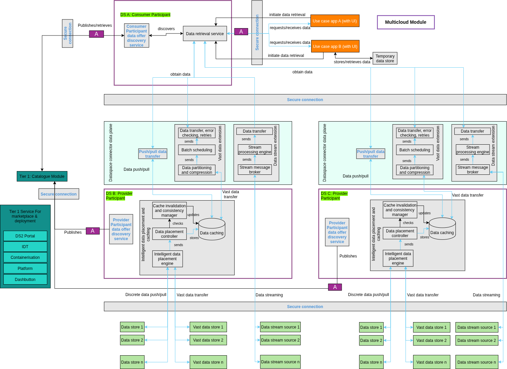

Multi-cloud Module (MCL)
| Project Links |
|---|
| Software GitHub Repository https://github.com/ds2-eu/mcl_module.git |
| Progress GitHub Project https://github.com/orgs/ds2-eu/projects/27 |
General Description
Purpose: The DS2 Multi-cloud module (MCL) enables efficient transfer of discreet data, vast amounts of data, and streaming data between participants of dataspaces from data stores that are distributed across multi-cloud storage infrastructure. MCL includes intelligent data placement and caching at dataspace provider participants with a dataspace consumer participant requesting such data and provide services through use case applications(s). It will also ensure data exchange happens over secure connections using the DS2 Security Module (SEC).
Description: When a use case application initiates a request for data through a dataspace consumer participant, the module ensures that the requested data is swiftly and accurately delivered from discovered and relevant provider participant(s). This process involves intelligent data placement by analysing access patterns and data requests (based on specific parameters) from the consumer participant that allows selecting the optimal data caching locations and employing predictive caching strategies to enhance data availability and retrieval speeds. In addition to push/pull style data sharing, this module introduces two novel extensions of the dataspace connector data plane for vast amount and streaming data sharing. Furthermore, it incorporates secure connectivity ensuring that all data exchanges are protected in transit. The module also aligns with the broader DS2 architecture, ensuring interoperability and synergy with various other modules and their sub-components. This enables the module to support a wide range of application scenarios and data exchange requirements.
Architecture
The figure below represents the module fit into the DS-DS environment.
The figure below represents the actors, internal structure, primary sub-components, primary DS2 module interfaces, and primary other interfaces of the module. 
Component Definition
When a use case initiates data retrieval request, it queries the data offer discovery service to determine which provider participant(s) can serve the requested data. To support vast amount and streaming data, two novel sub-components to the dataspace connector data plane are introduced. The intelligent data placement and caching sub-component analyses access patterns ensuring that frequently accessed various data stores (stored in multi-cloud infrastructure) is cached closer to the consumer participant. The actors, internal structure, primary sub-components, primary DS2 module interfaces, and primary other interfaces of the module are already depicted in the above architecture diagram.
This module has the following subcomponents and other functions:
-
Tier 1: Catalogue module: It securely stores a description metadata of the dataspaces and implements an interconnected search and retrieval system for a consumer participant to discover data and then relevant provider participant(s) end points.
-
Use case app: These are the high-level applications of users such as those in the use cases of DS2. Such applications can require data from multiple data stores, which are presumed to be distributed to multi-cloud data storage infrastructures. Also, the data sharing happens through multiple dataspace provider participants. Each use case can directly consume the obtained data and/or temporarily store them in a local storage for combining the data arriving in batches (in case of vast data transfer) or processing in future.
-
Temporary data store: A local data storage which are used by the use case apps to store data for (very) short term.
-
Secure connection: This sub-component is responsible for ensuring data sharing takes place over secure connections (e.g., VPN, SSL/TLS) and comes from the DS2 Security Module (SEC).
-
Dataspace connector (data plane): It facilitates secure and efficient transfer of data between participants in the DS2 ecosystem while ensuring compliance with agreed-upon data governance policies and handling data routing. In DS2, the data place supports three types of data sharing – discrete data, vast amounts of data, and streaming data.
-
Tier 1 Service for marketplace and deployment: The full stack will be implemented as generically described elsewhere in this document.
Dataspace consumer participant:
-
Consumer Participant data offer discovery service: This sub-component performs two tasks – (a) Publishes a description of the data offer of each participant to the Tier 1 catalogue module (for a centralised discovery) and (b) Enables a consumer participant within the DS2 ecosystem to discover the data offers for the use case applications. Furthermore, the data offer is published in the form of metadata (e.g., data type such as discrete, vast amount, or streaming data, accessibility conditions). This service exists as a background in DIGI’s cloud-based Paradise platform and will be adopted to store and search metadata of participant data offers.
-
Data retrieval service: This sub-component is triggered by the use case applications which require access to data stored in multi-cloud data stores. The dataspace consumer participant performs a discovery of the available provider participants and then proceeds to the retrieval of data stored from various data stores. This service allows dataspace consumer participants to request and obtain data needed for specific use case applications seamlessly. This service allows both push and pull type of data retrieval, supports multiple data type (such as discrete, vast amount, and streaming), and queries. Additionally, it ensures that data integrity and consistency are maintained throughout the retrieval process, providing reliable data access to user applications. The retrieved data may be directly used in such an application or may be temporarily stored in a data store. Integrity checks (hash verification) are performed especially for vast data transfer done through batches.
Dataspace provider participant:
-
Provider participant data offer discovery service: It publishes a description of the data offer of each participant to the Tier 1 catalogue module for a centralised discovery by the consumer participant.
-
Intelligent data placement and caching: This aims to optimise data storage and retrieval by strategically placing data across multi-cloud storage locations by employing predictive caching mechanisms. This component analyses access patterns from dataspace consumer participants and predict future data requests (based on specific parameters), ensuring that frequently accessed data is cached closer to the consumer participant. By doing so, it reduces latency and improves data retrieval speeds. The intelligent data placement strategy ensures optimal use of storage resources by distributing data based on access frequency, storage costs, and performance requirements. This sub-component is comprised of:
-
Cache invalidation and consistency manager: In case of data changes, this sub-component acts to invalidate or update outdated cached entries ensuring that stale data is not transferred. It will implement strategies like time-to-live settings, write-through caching, or cache coherence protocols.
-
Data placement controller: It enforces the decisions made by the data placement engine and handles the actual data movement in storage locations for data caching.
-
Intelligent data placement engine: This sub-component uses intelligent algorithms to determine where data should be cached. The placement decision is taken based on latency, access patterns from the consumer, data size, cost, network bandwidth, and other relevant factors.
-
Data caching: It covers the process of storing copies of frequently accessed data in a location closer to the consumer participant and the actual storage.
-
Dataspace connector data plane: In DS2, it supports three types of data transfer:
-
Push/pull data transfer: Data can be delivered to consumer counterpart through this sub-component either via a push model (where the dataspace sends data automatically at intervals or when triggered) or a pull model (where consumer participant requests data when needed). While this is supported by default in the dataspace connector, it is needed to accomplish discrete or small amounts of data transfer.
-
Vast data extension: Today, the dataspace connector data plane typically supports push-pull style of data transfer. DS2 introduces a novel sub-component called vast data extension to the data plane. It is designed to handle sharing of extremely large datasets stored across distributed data stores. It is composed of:
-
Data transfer, error checking, retries: Using this, the batch of data is transferred from a provider to a consumer participant. During the transfer, the provider side monitors for any errors or interruptions such as network connection lost. In case of an error detected, the sub-component retries the transfer or attempts to resume from the point of failure.
-
Batch scheduling: This sub-component schedules batch data transfers to run at specific times (e.g., every hour). The schedules are automatically developed based on the use case application’s needs. Scheduling can also occur during off-peak hours (should the use case need it) to minimise impact of the network and DS2 resources.
-
Data partitioning and compression: Extremely large datasets are split into smaller chunks or batches which are then compressed to save network bandwidth.
-
-
Data stream extension: This extension provides robust capabilities for handling real-time data streams within the DS2 architecture for use case(s) that require(s) data streaming. This is a novel sub-component introduced by DS2 for the dataspace connector data plane where data streaking is minimally supported in connectors today if at all. This component enables continuous data flows from various sources, such as IoT devices, sensors, and real-time applications. It supports high-throughput and low-latency data pipeline such as Apache Kafka, ensuring that streaming data is handled efficiently and reliably. This extension is composed of:
-
Data transfer: Using this, the stream of data is transferred from the provider to the consumer participant.
-
Stream processing engine: Processes continuous streams of data in (near) real time ensuring uninterrupted data flow, stateful processing capabilities, and ensure the stream is in right format needed by the use case applications. It can also be used for relatively simple data transformations and performing operations like data aggregation (if needed).
-
Stream message broker: The message broker serves as a buffer and pipeline between the streaming data sources and consumer participants. Data sources publish data to message queues or topics that act as the entry point to the streaming pipeline.
-
-
Data store: These data stores represent data storage at the participant. Each participant data store may be designed to manage a variety of data types and formats, providing a robust and scalable storage solution. The subcomponent architecture supports multiple data stores leveraging multi-cloud environments, enabling data to be distributed and replicated across different geographic locations, enhancing accessibility and redundancy.
-
Vast data store: Similar to the data store mentioned above, these are specific to storages with vast amounts of data.
-
Data stream source: This refers to data sources that continuously produce data, such as IoT devices, sensors (such as video cameras), and real-time applications (e.g., weather apps).
Screenshots
User interface for this module will be developed in RP2.
Commercial Information
Table with the organisation, license nature (Open Source, Commercial ... ) and the license. Replace with the values of your module.
| Organisation (s) | License Nature | License |
|---|---|---|
| DIGI | Open Source | Apache 2.0 |
Top Features
- Intelligent Data Placement & Predictive Caching: analyzes access patterns from dataspace consumer participants and pre-positions data in optimal storage locations.
- Supports Three Data Types: discreet, vast amounts, and streaming data.
- Secure Data Exchange: uses secure data transmission and integrates with the DS2 Security Module (SEC).
- Vast and Streaming Data Transfer Extensions: implements two new Data Space connector extensions for vast and streaming data.
- Stream Message Broker Integration: implements a broker acting as a buffer between streaming sources and consumer apps.
- Temporary and Vast Data Stores: supports both short term storage by use case apps as well as high-volume datasets distributed across multi-cloud environments.
- Data Offer Discovery Service: enables publishing and discovery of data offers by interacting with the DS2 Tier 1 Catalogue Module.
- Data Retrieval Service: enables seamless data access for use case apps.
- Modular, Extensible Architecture: supports cross-dataspace operations and is extensible to third-party systems.
How To Install
Requirements
Provision a Linux VM (Ubuntu 22.04 LTS or later) with 4vCPUs and 8GB RAM. The technical requirements might augment as the MCL module nears completion.
Software
Docker environment is necessary to run the MCL module.
Summary of installation steps
- clone the github repo
- run the docker compose file
Detailed steps
-
Clone the repository
-
Run the docker compose file
How To Use
To be done.
Other Information
No other information at the moment for MCL.
OpenAPI Specification
To be done.
Additional Links
To be done.